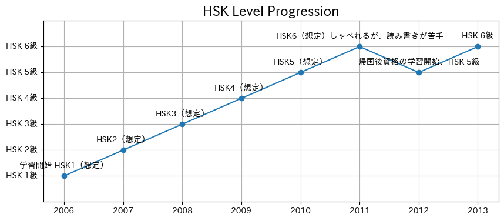
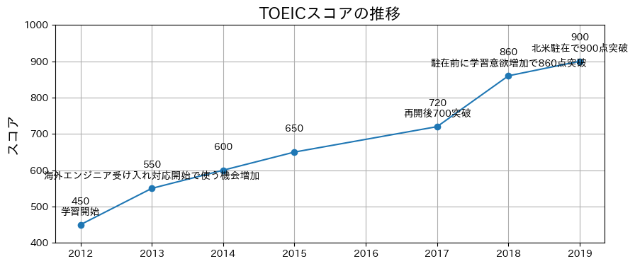

振り返ってみました。継続は力です。
中国語
2006年に入社とともに海外工場の技術支援で学習を開始しました。業務指示ややりたいことを伝える必要があり、必要に迫られ習得した感じです。会話中心で覚えました。
帰国後、形に残しておきたくてHSKを取得しました。
会話中心だったので、リスニングは問題なかったですが、読解と作文に苦戦しました。

英語
中国から帰国後に英語もつかえるようになりたいと思い、2012年に学習を開始しました。業務での海外エンジニアの受け入れ対応で英会話も少しづつ使うようになり、伸び始めました。
駐在前に860点取得したく、ギリギリ目標達成しました。
駐在後に900点以上達成後は、発音や省略表現に切り替えました。道半ばです。
ネイティブの英語のリスニングは苦戦しました。
今は洋画を楽しんで英語に触れています。
